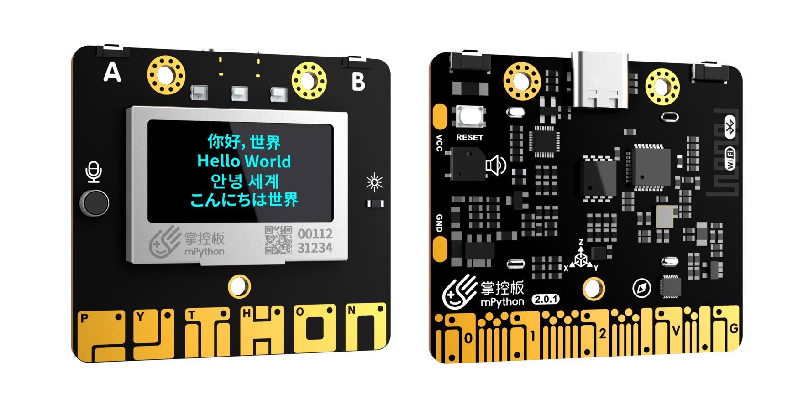

介绍¶
MicroPython是Python 3编程语言的精简高效实现 ，包括Python标准库的一小部分，并且经过优化，可在微控制器和受限环境中运行。
mPython掌控是一块MicroPython微控制器板。专为物联网设计，板载ESP-WROOM-32双核芯片，支持WiFi和蓝牙双模通信。 板上集成1.3英寸OLED显示屏、加速度计、地磁传感器、声、光传感器、蜂鸣器、2个物理按键、6个触摸按键。除此外，还有一个阻性输入接口，方便接入各种阻性传感器。 丰富多样的传感器和小体积的尺寸、结合蓝牙和WiFi双无线通讯，可现实不同的物联网应用场景。
MicroPython包含许多高级功能，如交互式提示，任意精度整数，闭包，列表理解，生成器，异常处理等。然而它非常紧凑，可以在仅256k的代码空间和16k的RAM内运行。
MicroPython旨在尽可能与普通Python兼容，以便您轻松地将代码从桌面传输到微控制器或嵌入式系统。
